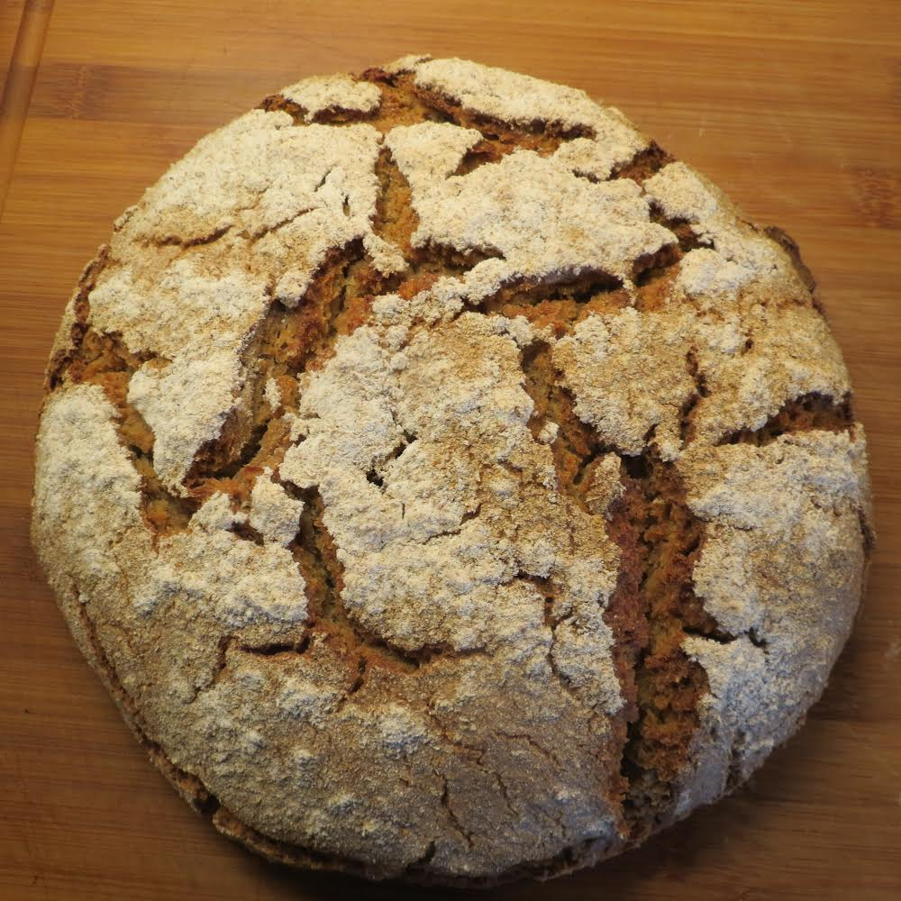

Pan de centeno
Ingredientes
1×
- 300 g de harina de centeno integral
- 200 g de harina de espelta o trigo
- 10 g de sal
- 5 g de levadura seca (o 150g de masa madre)
- 380 ml de agua tibia

Preparación
Paso 1
Mezclar 300 g de harina de centeno integral, 200 g de harina de espelta o trigo, 10 g de sal, 5 g de levadura seca (o 150g de masa madre) y 380 ml de agua tibia.
Paso 2
Amasar brevemente, formar una bola y enharinarla bien. Dejar levar 2h, hasta que la superficie se agriete.
Paso 3
Hornear en una olla de hierro precalentada 30min tapado y 20min destapado a 230ºC.
Resumen
300 g de harina de centeno integral
200 g de harina de espelta o trigo
10 g de sal
5 g de levadura seca (o 150g de masa madre)
380 ml de agua tibia
Mezclar
Amasar formar enharinarla
Hornear 230ºC